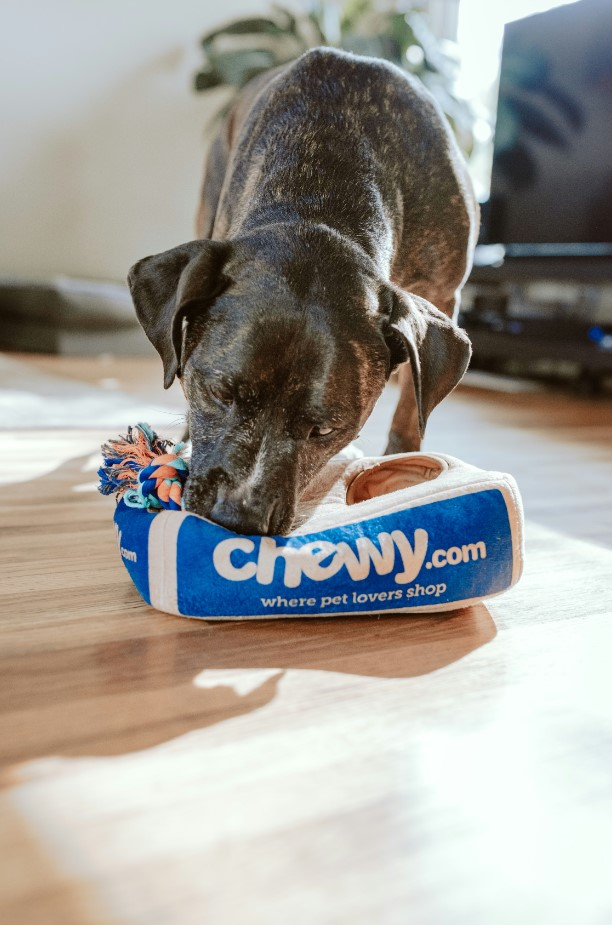

Diamond Dogs
Resgatamos, cuidamos e encontramos lares para cães abandonados ou em situação de risco.
Quero AjudarSobre a Diamond Dogs

Fundada em 2018, a Diamond Dogs é uma ONG 100% voluntária que atua no resgate, tratamento veterinário e adoção responsável de cães em situação de rua ou maus-tratos na Grande Belo Horizonte e região.
Já resgatamos mais de 2.300 cães e encontramos lares definitivos para mais de 1.800 deles.
Toda a nossa operação depende de doações e do trabalho incansável de voluntários como você.
Contato
E-mail: contato@diamonddogs.org.br
WhatsApp: (31) 99999-8888
Endereço: Rua dos Patinhas Felizes, 123 – Belo Horizonte – MG